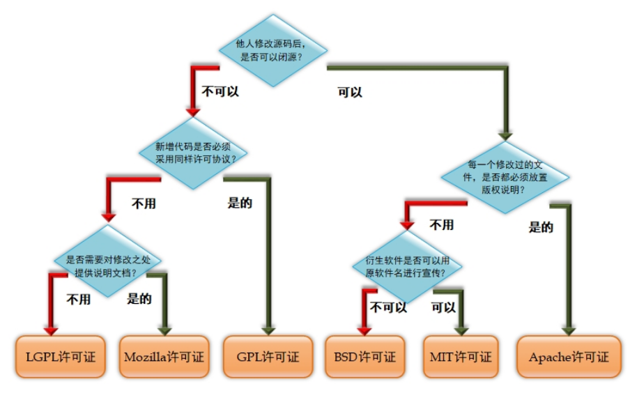
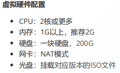
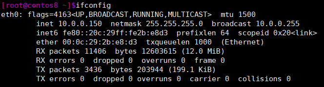

软件开源协定和linux安装
开源是指一种更自由的软件发布模式，软件程序和源代码文件一起打包提供给用户，让用户在不受限制地使用某个软件功能的基础上还可以对代码按需修改。用户一般享有使用自由、复制自由、修改自由、创建衍生品自由，以及收费自由。
软件开源协定
为了保护开源软件工作者的权益，开源促进组织OSI确认了多种开源许可证。其中主要的许可证可有：GPL、BSD、MIT、Mozilla、Apache和LGPL。可以根据软件权益需要选择相应开源协定。
GNU通用公共许可证（General Public License，GPL）：目前广泛使用的开源软件许可协议之一，用户享有运行、学习、共享和修改软件的自由。含有GPL许可证的软件必须开源、免费。
较宽松通用公共许可证（Lesser GPL, LGPL）：允许商业软件以类库引用的方式使用开源代码，而不用将其产品整体开源。
伯克利软件发布版（Berkeley Software Distribution, BSD）许可证：另一款被广泛使用的开源软件许可协议。相较于GPL许可证，BSD更加宽松，适合于商业用途。
MIT许可证（Massachusetts Institute of Technology License）：MIT许可证是目前限制最少的开源许可证之一，用户可以使用、复制、修改、再发布软件。
Mozilla公共许可证（Mozilla Public License，MPL）：在使用基于MPL许可证的源代码时，后续只需要继续开源这部分特定代码即可，新研发的软件不用完全被该许可证控制。
Apache许可证（Apache License）：该软件及其衍生品必须继续使用Apache许可证，如果修改了程序源代码，需要在文档中进行声明，若软件是基于他人的源代码编写而成的，则需要保留原始代码的许可证、商标、专利声明及原作者声明的其他内容信息。
开源协定的区别可见下图

安装Linux系统
安装前的准备
从开源镜像站点如阿里云、搜狐、163等网站下载系统镜像文件。安装VMware Workstation虚拟机软件。
虚拟机硬件配置参考

配置完硬件后开机，选择install开始安装，可随安装过程进行以下设置。
安装CentOS 8
进入安装界面后选择语言，设置磁盘分配策略，在manual partitioning创建分区，分别创建/boot / /swap /data分区。
在network&host name中设置主机名，打开虚拟网卡。设置时区为亚洲/上海时区。
开始安装后可设置root用户密码，创建一个普通用户。重启后可正常登陆使用则安装成功。
安装Ubuntu
进入安装界面后选择语言为英语，选择地区香港，选择键盘布局为英语。
制定主机名，设置用户密码(第一次登录不能使用root)，设置时区为亚洲/上海。
在partitioning method界面选择自定义，选择磁盘进行分区，选择FREE SPACE分区，创建根分区占全部剩余空间99%，选择剩余空间创建swap分区，为分区选择文件系统。写入磁盘。
空格选择安装openSSH，确认安装GNUB启动程序。重启后可登录使用。
ifconfig命令显示或设置网络设备参数信息
网卡名为eth0或ens*** inet后为ip地址。若用ifconfig修改配置信息，在重启后将会失效。
1 | |

Linux的文件层级结构标准（FHS）
| 目录名称 | 应放置文件的内容 |
|---|---|
| /boot | 开机所需文件—内核、开机菜单以及所需配置文件等 |
| /dev | 以文件形式存放任何设备与接口 |
| /etc | 配置文件 |
| /home | 用户主目录 |
| /bin | 存放单用户模式下还可以操作的命令 |
| /lib | 开机时用到的函数库，以及/bin与/sbin下面的命令要调用的函数 |
| /sbin | 开机过程中需要的命令 |
| /media | 用于挂载设备文件的目录 |
| /opt | 放置第三方的软件 |
| /root | 系统管理员的家目录 |
| /srv | 一些网络服务的数据文件目录 |
| /tmp | 任何人均可使用的“共享”临时目录 |
| /proc | 虚拟文件系统，例如系统内核、进程、外部设备及网络状态等 |
| /usr/local | 用户自行安装的软件 |
| /usr/sbin | Linux系统开机时不会使用到的软件/命令/脚本 |
| /usr/share | 帮助与说明文件，也可放置共享文件 |
| /var | 主要存放经常变化的文件，如日志 |
| /lost+found | 当文件系统发生错误时，将一些丢失的文件片段存放在这里 |
本博客所有文章除特别声明外，均采用 CC BY-SA 4.0 协议 ，转载请注明出处！